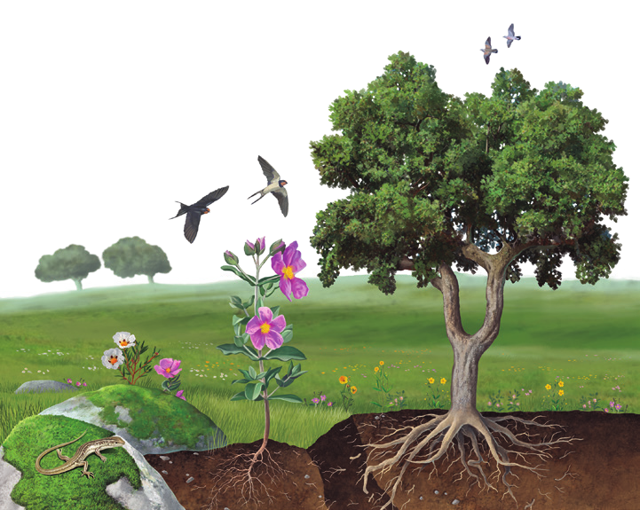
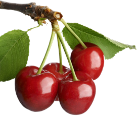

En el reino plantas se incluyen organismos como los equisetos, los musgos, los cactos, los helechos y las palmeras. Todos tienen en común dos características: están adaptados a la vida terrestre y obtienen de la luz solar la energía que necesitan para vivir.
Características de las plantas
A pesar de las diferencias que se aprecian entre las distintas plantas, la mayoría comparten los siguientes rasgos distintivos:
Son seres vivos pluricelulares, es decir, están formados por muchas células.
Son organismos autótrofos que fabrican los compuestos orgánicos de los que está hecho su cuerpo mediante fotosíntesis. Para realizarla, necesitan dióxido de carbono, agua y sales minerales, además de la energía obtenida de la luz solar.
La mayoría posee vasos conductores, que son tubos que transportan agua y sustancias nutritivas entre las distintas partes de su cuerpo.
Suelen vivir fijas al sustrato y no se desplazan, pero realizan algunos movimientos, como curvaturas o apertura y cierre de flores.
El cuerpo de la mayoría de las plantas está formado por raíz, tallo y hojas, aunque también pueden carecer de estos elementos, como ocurre en el caso de los musgos.

Ilustración de un ecosistema

Cerezas frescas en una rama